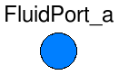
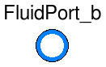
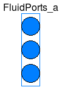
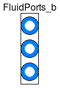

Extends from Modelica.Icons.Library (Icon for library).
| Name | Description |
|---|---|
| Interface for quasi one-dimensional fluid flow in a piping network (incompressible or compressible, one or more phases, one or more substances) | |
| FluidPort_a | Generic fluid connector at design inlet |
| Generic fluid connector at design outlet | |
| Fluid connector with filled, large icon to be used for vectors of FluidPorts (vector dimensions must be added after dragging) | |
| Fluid connector with outlined, large icon to be used for vectors of FluidPorts (vector dimensions must be added after dragging) | |
| Partial component with two ports | |
| Partial element transporting fluid between two ports without storage of mass or energy | |
| HeatPort connector with filled, large icon to be used for vectors of HeatPorts (vector dimensions must be added after dragging) | |
| HeatPort connector with filled, large icon to be used for vectors of HeatPorts (vector dimensions must be added after dragging) | |
| Common interface for heat transfer models | |
| PartialLumpedVolume | Lumped volume with mass and energy balance |
| PartialLumpedFlow | Base class for a lumped momentum balance |
| PartialDistributedVolume | Base class for distributed volume models |
| PartialDistributedFlow | Base class for a distributed momentum balance |
| Type | Name | Description |
|---|---|---|
| flow MassFlowRate | m_flow | Mass flow rate from the connection point into the component [kg/s] |
| AbsolutePressure | p | Thermodynamic pressure in the connection point [Pa] |
| stream SpecificEnthalpy | h_outflow | Specific thermodynamic enthalpy close to the connection point if m_flow < 0 [J/kg] |
| stream MassFraction | Xi_outflow[Medium.nXi] | Independent mixture mass fractions m_i/m close to the connection point if m_flow < 0 [kg/kg] |
| stream ExtraProperty | C_outflow[Medium.nC] | Properties c_i/m close to the connection point if m_flow < 0 |
connector FluidPort
"Interface for quasi one-dimensional fluid flow in a piping network (incompressible or compressible, one or more phases, one or more substances)"
replaceable package Medium = Modelica.Media.Interfaces.PartialMedium
"Medium model";
flow Medium.MassFlowRate m_flow
"Mass flow rate from the connection point into the component";
Medium.AbsolutePressure p "Thermodynamic pressure in the connection point";
stream Medium.SpecificEnthalpy h_outflow
"Specific thermodynamic enthalpy close to the connection point if m_flow < 0";
stream Medium.MassFraction Xi_outflow[Medium.nXi]
"Independent mixture mass fractions m_i/m close to the connection point if m_flow < 0";
stream Medium.ExtraProperty C_outflow[Medium.nC]
"Properties c_i/m close to the connection point if m_flow < 0";
end FluidPort;
 Modelica.Fluid.Interfaces.FluidPort_a
Modelica.Fluid.Interfaces.FluidPort_a
| Type | Name | Default | Description |
|---|---|---|---|
| replaceable package Medium | PartialMedium | Medium model | |
| Type | Name | Description |
|---|---|---|
| flow MassFlowRate | m_flow | Mass flow rate from the connection point into the component [kg/s] |
| AbsolutePressure | p | Thermodynamic pressure in the connection point [Pa] |
| stream SpecificEnthalpy | h_outflow | Specific thermodynamic enthalpy close to the connection point if m_flow < 0 [J/kg] |
| stream MassFraction | Xi_outflow[Medium.nXi] | Independent mixture mass fractions m_i/m close to the connection point if m_flow < 0 [kg/kg] |
| stream ExtraProperty | C_outflow[Medium.nC] | Properties c_i/m close to the connection point if m_flow < 0 |
connector FluidPort_a "Generic fluid connector at design inlet" extends FluidPort; end FluidPort_a;
 Modelica.Fluid.Interfaces.FluidPort_b
Modelica.Fluid.Interfaces.FluidPort_b
| Type | Name | Default | Description |
|---|---|---|---|
| replaceable package Medium | PartialMedium | Medium model | |
| Type | Name | Description |
|---|---|---|
| flow MassFlowRate | m_flow | Mass flow rate from the connection point into the component [kg/s] |
| AbsolutePressure | p | Thermodynamic pressure in the connection point [Pa] |
| stream SpecificEnthalpy | h_outflow | Specific thermodynamic enthalpy close to the connection point if m_flow < 0 [J/kg] |
| stream MassFraction | Xi_outflow[Medium.nXi] | Independent mixture mass fractions m_i/m close to the connection point if m_flow < 0 [kg/kg] |
| stream ExtraProperty | C_outflow[Medium.nC] | Properties c_i/m close to the connection point if m_flow < 0 |
connector FluidPort_b "Generic fluid connector at design outlet" extends FluidPort; end FluidPort_b;
 Modelica.Fluid.Interfaces.FluidPorts_a
Modelica.Fluid.Interfaces.FluidPorts_a
| Type | Name | Default | Description |
|---|---|---|---|
| replaceable package Medium | PartialMedium | Medium model | |
| Type | Name | Description |
|---|---|---|
| flow MassFlowRate | m_flow | Mass flow rate from the connection point into the component [kg/s] |
| AbsolutePressure | p | Thermodynamic pressure in the connection point [Pa] |
| stream SpecificEnthalpy | h_outflow | Specific thermodynamic enthalpy close to the connection point if m_flow < 0 [J/kg] |
| stream MassFraction | Xi_outflow[Medium.nXi] | Independent mixture mass fractions m_i/m close to the connection point if m_flow < 0 [kg/kg] |
| stream ExtraProperty | C_outflow[Medium.nC] | Properties c_i/m close to the connection point if m_flow < 0 |
connector FluidPorts_a "Fluid connector with filled, large icon to be used for vectors of FluidPorts (vector dimensions must be added after dragging)" extends FluidPort; end FluidPorts_a;

| Type | Name | Default | Description |
|---|---|---|---|
| replaceable package Medium | PartialMedium | Medium model | |
| Type | Name | Description |
|---|---|---|
| flow MassFlowRate | m_flow | Mass flow rate from the connection point into the component [kg/s] |
| AbsolutePressure | p | Thermodynamic pressure in the connection point [Pa] |
| stream SpecificEnthalpy | h_outflow | Specific thermodynamic enthalpy close to the connection point if m_flow < 0 [J/kg] |
| stream MassFraction | Xi_outflow[Medium.nXi] | Independent mixture mass fractions m_i/m close to the connection point if m_flow < 0 [kg/kg] |
| stream ExtraProperty | C_outflow[Medium.nC] | Properties c_i/m close to the connection point if m_flow < 0 |
connector FluidPorts_b "Fluid connector with outlined, large icon to be used for vectors of FluidPorts (vector dimensions must be added after dragging)" extends FluidPort; end FluidPorts_b;
 Modelica.Fluid.Interfaces.PartialTwoPort
Modelica.Fluid.Interfaces.PartialTwoPort

This partial model defines an interface for components with two ports. The treatment of the design flow direction and of flow reversal are predefined based on the parameter allowFlowReversal. The component may transport fluid and may have internal storage for a given fluid Medium.
An extending model providing direct access to internal storage of mass or energy through port_a or port_b should redefine the protected parameters port_a_exposesState and port_b_exposesState appropriately. This will be visualized at the port icons, in order to improve the understanding of fluid model diagrams.
| Type | Name | Default | Description |
|---|---|---|---|
| Assumptions | |||
| Boolean | allowFlowReversal | system.allowFlowReversal | = true to allow flow reversal, false restricts to design direction (port_a -> port_b) |
| Type | Name | Description |
|---|---|---|
| FluidPort_a | port_a | Fluid connector a (positive design flow direction is from port_a to port_b) |
| FluidPort_b | port_b | Fluid connector b (positive design flow direction is from port_a to port_b) |
partial model PartialTwoPort "Partial component with two ports"
import Modelica.Constants;
outer Modelica.Fluid.System system "System wide properties";
replaceable package Medium =
Modelica.Media.Interfaces.PartialMedium "Medium in the component";
parameter Boolean allowFlowReversal = system.allowFlowReversal
"= true to allow flow reversal, false restricts to design direction (port_a -> port_b)";
Modelica.Fluid.Interfaces.FluidPort_a port_a(
redeclare package Medium = Medium,
m_flow(min=if allowFlowReversal then -Constants.inf else 0))
"Fluid connector a (positive design flow direction is from port_a to port_b)";
Modelica.Fluid.Interfaces.FluidPort_b port_b(
redeclare package Medium = Medium,
m_flow(max=if allowFlowReversal then +Constants.inf else 0))
"Fluid connector b (positive design flow direction is from port_a to port_b)";
// Model structure, e.g. used for visualization
protected
parameter Boolean port_a_exposesState = false
"= true if port_a exposes the state of a fluid volume";
parameter Boolean port_b_exposesState = false
"= true if port_b.p exposes the state of a fluid volume";
parameter Boolean showDesignFlowDirection = true
"= false to hide the arrow in the model icon";
end PartialTwoPort;
Modelica.Fluid.Interfaces.PartialTwoPortTransport
This component transports fluid between its two ports, without storing mass or energy. Energy may be exchanged with the environment though, e.g. in the form of work. PartialTwoPortTransport is intended as base class for devices like orifices, valves and simple fluid machines.
Three equations need to be added by an extending class using this component:
| Type | Name | Default | Description |
|---|---|---|---|
| replaceable package Medium | PartialMedium | Medium in the component | |
| Assumptions | |||
| Boolean | allowFlowReversal | system.allowFlowReversal | = true to allow flow reversal, false restricts to design direction (port_a -> port_b) |
| Advanced | |||
| AbsolutePressure | dp_start | 0.01*system.p_start | Guess value of dp = port_a.p - port_b.p [Pa] |
| MassFlowRate | m_flow_start | system.m_flow_start | Guess value of m_flow = port_a.m_flow [kg/s] |
| MassFlowRate | m_flow_small | system.m_flow_small | Small mass flow rate for regularization of zero flow [kg/s] |
| Diagnostics | |||
| Boolean | show_T | true | = true, if temperatures at port_a and port_b are computed |
| Boolean | show_V_flow | true | = true, if volume flow rate at inflowing port is computed |
| Type | Name | Description |
|---|---|---|
| FluidPort_a | port_a | Fluid connector a (positive design flow direction is from port_a to port_b) |
| FluidPort_b | port_b | Fluid connector b (positive design flow direction is from port_a to port_b) |
partial model PartialTwoPortTransport
"Partial element transporting fluid between two ports without storage of mass or energy"
extends PartialTwoPort(
final port_a_exposesState=false,
final port_b_exposesState=false);
// Advanced
parameter Medium.AbsolutePressure dp_start = 0.01*system.p_start
"Guess value of dp = port_a.p - port_b.p";
parameter Medium.MassFlowRate m_flow_start = system.m_flow_start
"Guess value of m_flow = port_a.m_flow";
parameter Medium.MassFlowRate m_flow_small = system.m_flow_small
"Small mass flow rate for regularization of zero flow";
// Diagnostics
parameter Boolean show_T = true
"= true, if temperatures at port_a and port_b are computed";
parameter Boolean show_V_flow = true
"= true, if volume flow rate at inflowing port is computed";
// Variables
Medium.MassFlowRate m_flow(
min=if allowFlowReversal then -Modelica.Constants.inf else 0,
start = m_flow_start) "Mass flow rate in design flow direction";
Modelica.SIunits.Pressure dp(start=dp_start)
"Pressure difference between port_a and port_b (= port_a.p - port_b.p)";
Modelica.SIunits.VolumeFlowRate V_flow=
m_flow/Modelica.Fluid.Utilities.regStep(m_flow,
Medium.density(state_a),
Medium.density(state_b),
m_flow_small) if show_V_flow
"Volume flow rate at inflowing port (positive when flow from port_a to port_b)";
Medium.Temperature port_a_T=
Modelica.Fluid.Utilities.regStep(port_a.m_flow,
Medium.temperature(state_a),
Medium.temperature(Medium.setState_phX(port_a.p, port_a.h_outflow, port_a.Xi_outflow)),
m_flow_small) if show_T
"Temperature close to port_a, if show_T = true";
Medium.Temperature port_b_T=
Modelica.Fluid.Utilities.regStep(port_b.m_flow,
Medium.temperature(state_b),
Medium.temperature(Medium.setState_phX(port_b.p, port_b.h_outflow, port_b.Xi_outflow)),
m_flow_small) if show_T
"Temperature close to port_b, if show_T = true";
protected
Medium.ThermodynamicState state_a "state for medium inflowing through port_a";
Medium.ThermodynamicState state_b "state for medium inflowing through port_b";
equation
// medium states
state_a = Medium.setState_phX(port_a.p, inStream(port_a.h_outflow), inStream(port_a.Xi_outflow));
state_b = Medium.setState_phX(port_b.p, inStream(port_b.h_outflow), inStream(port_b.Xi_outflow));
// Pressure drop in design flow direction
dp = port_a.p - port_b.p;
// Design direction of mass flow rate
m_flow = port_a.m_flow;
assert(m_flow > -m_flow_small or allowFlowReversal, "Reverting flow occurs even though allowFlowReversal is false");
// Mass balance (no storage)
port_a.m_flow + port_b.m_flow = 0;
// Transport of substances
port_a.Xi_outflow = inStream(port_b.Xi_outflow);
port_b.Xi_outflow = inStream(port_a.Xi_outflow);
port_a.C_outflow = inStream(port_b.C_outflow);
port_b.C_outflow = inStream(port_a.C_outflow);
end PartialTwoPortTransport;
 Modelica.Fluid.Interfaces.HeatPorts_a
Modelica.Fluid.Interfaces.HeatPorts_a
| Type | Name | Description |
|---|---|---|
| Temperature | T | Port temperature [K] |
| flow HeatFlowRate | Q_flow | Heat flow rate (positive if flowing from outside into the component) [W] |
connector HeatPorts_a "HeatPort connector with filled, large icon to be used for vectors of HeatPorts (vector dimensions must be added after dragging)" extends Modelica.Thermal.HeatTransfer.Interfaces.HeatPort; end HeatPorts_a;
 Modelica.Fluid.Interfaces.HeatPorts_b
Modelica.Fluid.Interfaces.HeatPorts_b
| Type | Name | Description |
|---|---|---|
| Temperature | T | Port temperature [K] |
| flow HeatFlowRate | Q_flow | Heat flow rate (positive if flowing from outside into the component) [W] |
connector HeatPorts_b "HeatPort connector with filled, large icon to be used for vectors of HeatPorts (vector dimensions must be added after dragging)" extends Modelica.Thermal.HeatTransfer.Interfaces.HeatPort; end HeatPorts_b;
 Modelica.Fluid.Interfaces.PartialHeatTransfer
Modelica.Fluid.Interfaces.PartialHeatTransfer

This component is a common interface for heat transfer models. The heat flow rates Q_flows[n] through the boundaries of n flow segments are obtained as function of the thermodynamic states of the flow segments for a given fluid Medium, the surfaceAreas[n] and the boundary temperatures heatPorts[n].T.
The heat loss coefficient k can be used to model a thermal isolation between heatPorts.T and T_ambient.
An extending model implementing this interface needs to define one equation: the relation between the predefined fluid temperatures Ts[n], the boundary temperatures heatPorts[n].T, and the heat flow rates Q_flows[n].
| Type | Name | Default | Description |
|---|---|---|---|
| Ambient | |||
| CoefficientOfHeatTransfer | k | 0 | Heat transfer coefficient to ambient [W/(m2.K)] |
| Temperature | T_ambient | system.T_ambient | Ambient temperature [K] |
| Internal Interface | |||
| Integer | n | 1 | Number of heat transfer segments |
| Boolean | use_k | false | = true to use k value for thermal isolation |
| Type | Name | Description |
|---|---|---|
| HeatPorts_a | heatPorts[n] | Heat port to component boundary |
partial model PartialHeatTransfer
"Common interface for heat transfer models"
// Parameters
replaceable package Medium=Modelica.Media.Interfaces.PartialMedium
"Medium in the component";
parameter Integer n=1 "Number of heat transfer segments";
// Inputs provided to heat transfer model
input Medium.ThermodynamicState[n] states
"Thermodynamic states of flow segments";
input SI.Area[n] surfaceAreas "Heat transfer areas";
// Outputs defined by heat transfer model
output SI.HeatFlowRate[n] Q_flows "Heat flow rates";
// Parameters
parameter Boolean use_k = false "= true to use k value for thermal isolation";
parameter SI.CoefficientOfHeatTransfer k = 0
"Heat transfer coefficient to ambient";
parameter SI.Temperature T_ambient = system.T_ambient "Ambient temperature";
outer Modelica.Fluid.System system "System wide properties";
// Heat ports
Modelica.Fluid.Interfaces.HeatPorts_a[n] heatPorts
"Heat port to component boundary";
// Variables
SI.Temperature[n] Ts = Medium.temperature(states)
"Temperatures defined by fluid states";
equation
if use_k then
Q_flows = heatPorts.Q_flow + {k*surfaceAreas[i]*(T_ambient - heatPorts[i].T) for i in 1:n};
else
Q_flows = heatPorts.Q_flow;
end if;
end PartialHeatTransfer;
Further source terms must be defined by an extending class for fluid flow across the segment boundary:
| Type | Name | Default | Description |
|---|---|---|---|
| Assumptions | |||
| Dynamics | |||
| Dynamics | energyDynamics | system.energyDynamics | Formulation of energy balance |
| Dynamics | massDynamics | system.massDynamics | Formulation of mass balance |
| Initialization | |||
| AbsolutePressure | p_start | system.p_start | Start value of pressure [Pa] |
| Boolean | use_T_start | true | = true, use T_start, otherwise h_start |
| Temperature | T_start | if use_T_start then system.T... | Start value of temperature [K] |
| SpecificEnthalpy | h_start | if use_T_start then Medium.s... | Start value of specific enthalpy [J/kg] |
| MassFraction | X_start[Medium.nX] | Medium.X_default | Start value of mass fractions m_i/m [kg/kg] |
| ExtraProperty | C_start[Medium.nC] | fill(0, Medium.nC) | Start value of trace substances |
partial model PartialLumpedVolume
"Lumped volume with mass and energy balance"
import Modelica.Fluid.Types;
import Modelica.Fluid.Types.Dynamics;
outer Modelica.Fluid.System system "System properties";
replaceable package Medium =
Modelica.Media.Interfaces.PartialMedium "Medium in the component";
// Inputs provided to the volume model
input SI.Volume fluidVolume "Volume";
// Assumptions
parameter Types.Dynamics energyDynamics=system.energyDynamics
"Formulation of energy balance";
parameter Types.Dynamics massDynamics=system.massDynamics
"Formulation of mass balance";
final parameter Types.Dynamics substanceDynamics=massDynamics
"Formulation of substance balance";
final parameter Types.Dynamics traceDynamics=massDynamics
"Formulation of trace substance balance";
// Initialization
parameter Medium.AbsolutePressure p_start = system.p_start
"Start value of pressure";
parameter Boolean use_T_start = true "= true, use T_start, otherwise h_start";
parameter Medium.Temperature T_start=
if use_T_start then system.T_start else Medium.temperature_phX(p_start,h_start,X_start)
"Start value of temperature";
parameter Medium.SpecificEnthalpy h_start=
if use_T_start then Medium.specificEnthalpy_pTX(p_start, T_start, X_start) else Medium.h_default
"Start value of specific enthalpy";
parameter Medium.MassFraction X_start[Medium.nX] = Medium.X_default
"Start value of mass fractions m_i/m";
parameter Medium.ExtraProperty C_start[Medium.nC](
quantity=Medium.extraPropertiesNames)=fill(0, Medium.nC)
"Start value of trace substances";
Medium.BaseProperties medium(
preferredMediumStates=true,
p(start=p_start),
h(start=h_start),
T(start=T_start),
Xi(start=X_start[1:Medium.nXi]));
SI.Energy U "Internal energy of fluid";
SI.Mass m "Mass of fluid";
SI.Mass[Medium.nXi] mXi "Masses of independent components in the fluid";
SI.Mass[Medium.nC] mC "Masses of trace substances in the fluid";
// C need to be added here because unlike for Xi, which has medium.Xi,
// there is no variable medium.C
Medium.ExtraProperty C[Medium.nC] "Trace substance mixture content";
// variables that need to be defined by an extending class
SI.MassFlowRate mb_flow "Mass flows across boundaries";
SI.MassFlowRate[Medium.nXi] mbXi_flow
"Substance mass flows across boundaries";
Medium.ExtraPropertyFlowRate[Medium.nC] mbC_flow
"Trace substance mass flows across boundaries";
SI.EnthalpyFlowRate Hb_flow
"Enthalpy flow across boundaries or energy source/sink";
SI.HeatFlowRate Qb_flow "Heat flow across boundaries or energy source/sink";
SI.Power Wb_flow "Work flow across boundaries or source term";
protected
parameter Boolean initialize_p = not Medium.singleState
"= true to set up initial equations for pressure";
equation
assert(not (energyDynamics<>Dynamics.SteadyState and massDynamics==Dynamics.SteadyState) or Medium.singleState,
"Bad combination of dynamics options and Medium not conserving mass if fluidVolume is fixed.");
// Total quantities
m = fluidVolume*medium.d;
mXi = m*medium.Xi;
U = m*medium.u;
mC = m*C;
// Energy and mass balances
if energyDynamics == Dynamics.SteadyState then
0 = Hb_flow + Qb_flow + Wb_flow;
else
der(U) = Hb_flow + Qb_flow + Wb_flow;
end if;
if massDynamics == Dynamics.SteadyState then
0 = mb_flow;
else
der(m) = mb_flow;
end if;
if substanceDynamics == Dynamics.SteadyState then
zeros(Medium.nXi) = mbXi_flow;
else
der(mXi) = mbXi_flow;
end if;
if traceDynamics == Dynamics.SteadyState then
zeros(Medium.nC) = mbC_flow;
else
der(mC) = mbC_flow;
end if;
initial equation
// initialization of balances
if energyDynamics == Dynamics.FixedInitial then
if use_T_start then
medium.T = T_start;
else
medium.h = h_start;
end if;
elseif energyDynamics == Dynamics.SteadyStateInitial then
if use_T_start then
der(medium.T) = 0;
else
der(medium.h) = 0;
end if;
end if;
if massDynamics == Dynamics.FixedInitial then
if initialize_p then
medium.p = p_start;
end if;
elseif massDynamics == Dynamics.SteadyStateInitial then
if initialize_p then
der(medium.p) = 0;
end if;
end if;
if substanceDynamics == Dynamics.FixedInitial then
medium.Xi = X_start[1:Medium.nXi];
elseif substanceDynamics == Dynamics.SteadyStateInitial then
der(medium.Xi) = zeros(Medium.nXi);
end if;
if traceDynamics == Dynamics.FixedInitial then
C = C_start[1:Medium.nC];
elseif traceDynamics == Dynamics.SteadyStateInitial then
der(C) = zeros(Medium.nC);
end if;
end PartialLumpedVolume;
Interface and base class for a momentum balance, defining the mass flow rate m_flow of a given Medium in a flow model.
The following boundary flow and force terms are part of the momentum balance and must be specified in an extending model (to zero if not considered):
| Type | Name | Default | Description |
|---|---|---|---|
| replaceable package Medium | Modelica.Media.Interfaces.Pa... | Medium in the component | |
| Assumptions | |||
| Boolean | allowFlowReversal | system.allowFlowReversal | = true to allow flow reversal, false restricts to design direction (m_flow >= 0) |
| Dynamics | |||
| Dynamics | momentumDynamics | system.momentumDynamics | Formulation of momentum balance |
| Initialization | |||
| MassFlowRate | m_flow_start | system.m_flow_start | Start value of mass flow rates [kg/s] |
| Type | Name | Description |
|---|---|---|
| replaceable package Medium | Medium in the component | |
partial model PartialLumpedFlow
"Base class for a lumped momentum balance"
outer Modelica.Fluid.System system "System properties";
replaceable package Medium =
Modelica.Media.Interfaces.PartialMedium "Medium in the component";
parameter Boolean allowFlowReversal = system.allowFlowReversal
"= true to allow flow reversal, false restricts to design direction (m_flow >= 0)";
// Inputs provided to the flow model
input SI.Length pathLength "Length flow path";
// Variables defined by the flow model
Medium.MassFlowRate m_flow(
min=if allowFlowReversal then -Modelica.Constants.inf else 0,
start = m_flow_start,
stateSelect = if momentumDynamics == Types.Dynamics.SteadyState then StateSelect.default else
StateSelect.prefer)
"mass flow rates between states";
// Parameters
parameter Modelica.Fluid.Types.Dynamics momentumDynamics=system.momentumDynamics
"Formulation of momentum balance";
parameter Medium.MassFlowRate m_flow_start=system.m_flow_start
"Start value of mass flow rates";
// Total quantities
SI.Momentum I "Momentums of flow segments";
// Source terms and forces to be defined by an extending model (zero if not used)
SI.Force Ib_flow "Flow of momentum across boudaries";
SI.Force F_p "Pressure force";
SI.Force F_fg "Friction and gravity force";
equation
// Total quantities
I = m_flow*pathLength;
// Momentum balances
if momentumDynamics == Types.Dynamics.SteadyState then
0 = Ib_flow - F_p - F_fg;
else
der(I) = Ib_flow - F_p - F_fg;
end if;
initial equation
if momentumDynamics == Types.Dynamics.FixedInitial then
m_flow = m_flow_start;
elseif momentumDynamics == Types.Dynamics.SteadyStateInitial then
der(m_flow) = 0;
end if;
end PartialLumpedFlow;
Further source terms must be defined by an extending class for fluid flow across the segment boundary:
| Type | Name | Default | Description |
|---|---|---|---|
| Integer | n | 2 | Number of discrete volumes |
| Assumptions | |||
| Dynamics | |||
| Dynamics | energyDynamics | system.energyDynamics | Formulation of energy balances |
| Dynamics | massDynamics | system.massDynamics | Formulation of mass balances |
| Initialization | |||
| AbsolutePressure | p_a_start | system.p_start | Start value of pressure at port a [Pa] |
| AbsolutePressure | p_b_start | p_a_start | Start value of pressure at port b [Pa] |
| Boolean | use_T_start | true | Use T_start if true, otherwise h_start |
| Temperature | T_start | if use_T_start then system.T... | Start value of temperature [K] |
| SpecificEnthalpy | h_start | if use_T_start then Medium.s... | Start value of specific enthalpy [J/kg] |
| MassFraction | X_start[Medium.nX] | Medium.X_default | Start value of mass fractions m_i/m [kg/kg] |
| ExtraProperty | C_start[Medium.nC] | fill(0, Medium.nC) | Start value of trace substances |
partial model PartialDistributedVolume
"Base class for distributed volume models"
import Modelica.Fluid.Types;
import Modelica.Fluid.Types.Dynamics;
outer Modelica.Fluid.System system "System properties";
replaceable package Medium =
Modelica.Media.Interfaces.PartialMedium "Medium in the component";
// Discretization
parameter Integer n=2 "Number of discrete volumes";
// Inputs provided to the volume model
input SI.Volume[n] fluidVolumes
"Discretized volume, determine in inheriting class";
// Assumptions
parameter Types.Dynamics energyDynamics=system.energyDynamics
"Formulation of energy balances";
parameter Types.Dynamics massDynamics=system.massDynamics
"Formulation of mass balances";
final parameter Types.Dynamics substanceDynamics=massDynamics
"Formulation of substance balances";
final parameter Types.Dynamics traceDynamics=massDynamics
"Formulation of trace substance balances";
//Initialization
parameter Medium.AbsolutePressure p_a_start=system.p_start
"Start value of pressure at port a";
parameter Medium.AbsolutePressure p_b_start=p_a_start
"Start value of pressure at port b";
final parameter Medium.AbsolutePressure[n] ps_start=if n > 1 then linspace(
p_a_start, p_b_start, n) else {(p_a_start + p_b_start)/2}
"Start value of pressure";
parameter Boolean use_T_start=true "Use T_start if true, otherwise h_start";
parameter Medium.Temperature T_start=if use_T_start then system.T_start else
Medium.temperature_phX(
(p_a_start + p_b_start)/2,
h_start,
X_start) "Start value of temperature";
parameter Medium.SpecificEnthalpy h_start=if use_T_start then
Medium.specificEnthalpy_pTX(
(p_a_start + p_b_start)/2,
T_start,
X_start) else Medium.h_default "Start value of specific enthalpy";
parameter Medium.MassFraction X_start[Medium.nX]=Medium.X_default
"Start value of mass fractions m_i/m";
parameter Medium.ExtraProperty C_start[Medium.nC](
quantity=Medium.extraPropertiesNames)=fill(0, Medium.nC)
"Start value of trace substances";
// Total quantities
SI.Energy[n] Us "Internal energy of fluid";
SI.Mass[n] ms "Fluid mass";
SI.Mass[n,Medium.nXi] mXis "Substance mass";
SI.Mass[n,Medium.nC] mCs "Trace substance mass";
// C need to be added here because unlike for Xi, which has medium[:].Xi,
// there is no variable medium[:].C
Medium.ExtraProperty Cs[n, Medium.nC] "Trace substance mixture content";
Medium.BaseProperties[n] mediums(
each preferredMediumStates=true,
p(start=ps_start),
each h(start=h_start),
each T(start=T_start),
each Xi(start=X_start[1:Medium.nXi]));
//Source terms, have to be defined by an extending model (to zero if not used)
Medium.MassFlowRate[n] mb_flows "Mass flow rate, source or sink";
Medium.MassFlowRate[n,Medium.nXi] mbXi_flows
"Independent mass flow rates, source or sink";
Medium.ExtraPropertyFlowRate[n,Medium.nC] mbC_flows
"Trace substance mass flow rates, source or sink";
SI.EnthalpyFlowRate[n] Hb_flows "Enthalpy flow rate, source or sink";
SI.HeatFlowRate[n] Qb_flows "Heat flow rate, source or sink";
SI.Power[n] Wb_flows "Mechanical power, p*der(V) etc.";
protected
parameter Boolean initialize_p = not Medium.singleState
"= true to set up initial equations for pressure";
equation
assert(not (energyDynamics<>Dynamics.SteadyState and massDynamics==Dynamics.SteadyState) or Medium.singleState,
"Bad combination of dynamics options and Medium not conserving mass if fluidVolumes are fixed.");
// Total quantities
for i in 1:n loop
ms[i] =fluidVolumes[i]*mediums[i].d;
mXis[i, :] = ms[i]*mediums[i].Xi;
mCs[i, :] = ms[i]*Cs[i, :];
Us[i] = ms[i]*mediums[i].u;
end for;
// Energy and mass balances
if energyDynamics == Dynamics.SteadyState then
for i in 1:n loop
0 = Hb_flows[i] + Wb_flows[i] + Qb_flows[i];
end for;
else
for i in 1:n loop
der(Us[i]) = Hb_flows[i] + Wb_flows[i] + Qb_flows[i];
end for;
end if;
if massDynamics == Dynamics.SteadyState then
for i in 1:n loop
0 = mb_flows[i];
end for;
else
for i in 1:n loop
der(ms[i]) = mb_flows[i];
end for;
end if;
if substanceDynamics == Dynamics.SteadyState then
for i in 1:n loop
zeros(Medium.nXi) = mbXi_flows[i, :];
end for;
else
for i in 1:n loop
der(mXis[i, :]) = mbXi_flows[i, :];
end for;
end if;
if traceDynamics == Dynamics.SteadyState then
for i in 1:n loop
zeros(Medium.nC) = mbC_flows[i, :];
end for;
else
for i in 1:n loop
der(mCs[i, :]) = mbC_flows[i, :];
end for;
end if;
initial equation
// initialization of balances
if energyDynamics == Dynamics.FixedInitial then
if use_T_start then
mediums.T = fill(T_start, n);
else
mediums.h = fill(h_start, n);
end if;
elseif energyDynamics == Dynamics.SteadyStateInitial then
if use_T_start then
der(mediums.T) = zeros(n);
else
der(mediums.h) = zeros(n);
end if;
end if;
if massDynamics == Dynamics.FixedInitial then
if initialize_p then
mediums.p = ps_start;
end if;
elseif massDynamics == Dynamics.SteadyStateInitial then
if initialize_p then
der(mediums.p) = zeros(n);
end if;
end if;
if substanceDynamics == Dynamics.FixedInitial then
mediums.Xi = fill(X_start[1:Medium.nXi], n);
elseif substanceDynamics == Dynamics.SteadyStateInitial then
for i in 1:n loop
der(mediums[i].Xi) = zeros(Medium.nXi);
end for;
end if;
if traceDynamics == Dynamics.FixedInitial then
Cs = fill(C_start[1:Medium.nC], n);
elseif traceDynamics == Dynamics.SteadyStateInitial then
for i in 1:n loop
der(mCs[i,:]) = zeros(Medium.nC);
end for;
end if;
end PartialDistributedVolume;
Interface and base class for m momentum balances, defining the mass flow rates m_flows[m] of a given Medium in m flow segments.
The following boundary flow and force terms are part of the momentum balances and must be specified in an extending model (to zero if not considered):
| Type | Name | Default | Description |
|---|---|---|---|
| replaceable package Medium | Modelica.Media.Interfaces.Pa... | Medium in the component | |
| Integer | m | 1 | Number of flow segments |
| Assumptions | |||
| Boolean | allowFlowReversal | system.allowFlowReversal | = true to allow flow reversal, false restricts to design direction (m_flows >= zeros(m)) |
| Dynamics | |||
| Dynamics | momentumDynamics | system.momentumDynamics | Formulation of momentum balance |
| Initialization | |||
| MassFlowRate | m_flow_start | system.m_flow_start | Start value of mass flow rates [kg/s] |
| Type | Name | Description |
|---|---|---|
| replaceable package Medium | Medium in the component | |
partial model PartialDistributedFlow
"Base class for a distributed momentum balance"
outer Modelica.Fluid.System system "System properties";
replaceable package Medium =
Modelica.Media.Interfaces.PartialMedium "Medium in the component";
parameter Boolean allowFlowReversal = system.allowFlowReversal
"= true to allow flow reversal, false restricts to design direction (m_flows >= zeros(m))";
// Discretization
parameter Integer m=1 "Number of flow segments";
// Inputs provided to the flow model
input SI.Length[m] pathLengths "Lengths along flow path";
// Variables defined by momentum model
Medium.MassFlowRate[m] m_flows(
each min=if allowFlowReversal then -Modelica.Constants.inf else 0,
each start = m_flow_start,
each stateSelect = if momentumDynamics == Types.Dynamics.SteadyState then StateSelect.default else
StateSelect.prefer)
"mass flow rates between states";
// Parameters
parameter Modelica.Fluid.Types.Dynamics momentumDynamics=system.momentumDynamics
"Formulation of momentum balance";
parameter Medium.MassFlowRate m_flow_start=system.m_flow_start
"Start value of mass flow rates";
// Total quantities
SI.Momentum[m] Is "Momentums of flow segments";
// Source terms and forces to be defined by an extending model (zero if not used)
SI.Force[m] Ib_flows "Flow of momentum across boudaries";
SI.Force[m] Fs_p "Pressure forces";
SI.Force[m] Fs_fg "Friction and gravity forces";
equation
// Total quantities
Is = {m_flows[i]*pathLengths[i] for i in 1:m};
// Momentum balances
if momentumDynamics == Types.Dynamics.SteadyState then
zeros(m) = Ib_flows - Fs_p - Fs_fg;
else
der(Is) = Ib_flows - Fs_p - Fs_fg;
end if;
initial equation
if momentumDynamics == Types.Dynamics.FixedInitial then
m_flows = fill(m_flow_start, m);
elseif momentumDynamics == Types.Dynamics.SteadyStateInitial then
der(m_flows) = zeros(m);
end if;
end PartialDistributedFlow;